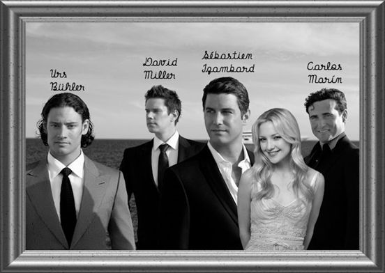
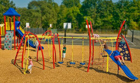

Dit zijn beginzinnen voor een verhaal. Wil je het verhaal verder schrijven? Dat is geen enkel probleem. Shrijf het in Word en stuur je verhaal naar Viviane.lambrichts@gmail.com. Ik plaats je verhaal op de juiste plaats erbij . Je hebt misschien een verborgen talent.
1.Op school was het zo gek nog niet
Bah, het is altijd hetzelfde! Nu ben ik weer eens doornat omdat ik met die krakkemikkige roze fiets van mijn zus naar het werk moet rijden. En steeds dat zelfde werk. En die verdomde bel om de aanvang in te luiden, om pauze te houden of om aankondigingen van de baas te horen, en nog meer van die stomme dingen.
Op school hadden ze ook een bel, net zo vervelend als deze. Ja, de school … dan zat ik nu tenminste droog op de bus. Daar gebeurden wel leuke en minder plezante dingen. Bijvoorbeeld toen we allemaal vliegtuigjes maakten van papier. Als onze leerkracht op het bord schreef konden wij met de vliegtuigjes naar het bord en naar elkaar gooiden.
Ik heb indertijd toch wel veel plezier gemaakt op school. Jullie misschien ook?
2.Mijn trouwe kater is verdwenen
Gisteren weer eens goed doorgezakt met mijn maten. Hoe ben ik eigenlijk thuisgeraakt? Ik weet er niks meer van. En waar is mijn kater? Hij lag dan toch altijd trouw boven mijn hoofd in bed als ik van een ‘doorzakkerij’ thuiskwam. Hij is weg, ik heb geen kater meer! Of is hij bij één van mijn maten blijven overnachten?
Zo erg is dat ook weer niet, hij komt zeker en vast terug. Daarvoor ken ik hem (en mezelf) veel te goed.
3.De jeugd van tegenwoordig …
“Och mijnheer, de jeugd van tegenwoordig!
Wat gaan we nog allemaal meemaken? Het is nog niet genoeg dat we rekening met terreur moeten houden. Mijn vrouw en ik bidden iedere dag dat onze vijf kinderen geen slechte vrienden treffen. En dan maar de hele tijd gamen, waar ik geen snars van begrijp. Wat hebben ze er toch aan? Ze gamen ook ’s nachts met jeugd aan de andere kant van de wereld. En dan die met Facebook, de jongere kinderen spreken af met zogezegd vriendinnen van hun leeftijd.
En vooral moet je eraan denken dat zij de toekomst zijn. Zij worden ministers een gaan wetten en regeltjes maken, waar iedereen zich aan moet houden.
En toch mijnheer, ieder kind heeft een stukje goud in zijn of haar hart. Ik ga nu niet verder filosoferen. Mijn vrouw wacht met taart en koffie.”
Mompelend ging hij verder: “de jeugd van tegenwoordig … ja, ja.”
4.Naar het bejaardentehuis? Nooit!
Wat willen die vier kinderen nu van mij! Ik naar het bejaardentehuis! Ze hebben een slag van de molen gehad. Verdorie, ik heb hen groot gebracht en verzorgd. Nu is het aan hen om mij te verzorgen. Ik ga hier pas buiten tussen zes planken. Die zotten denken dat ik een oud mens ben! Ik ben nog maar tachtig.
Dat ik onlangs mijn handtas in de diepvries had gestoken, dat kan toch iedereen overkomen. En dat ik mijn rok en bloes verkeerd aan had, de buitenkant aan de binnenkant zat. Ja, als de buitenkant vuil is, moet ik het toch zo dragen, dan ben ik weer een propere madam. Ze zijn al kwaad als ik mijn ondergoed om de drie weken ververs. Ik moet toch zuinig zijn.
En dat allemaal met mijn hoge bloeddruk, dat ze daar ook eens aan denken!
Ja, ja, stomme kinderen! …
5.Veertien dagen vakantie – veertien dagen regen
“Mama, wij vervelen ons. We kunnen niet eens buiten spelen. Eppi is een kuiken.” Komt Immi zagen. “Foei, Immi, dat mag je niet zeggen over je broer. Jullie vervelen jullie zeker? We gaan een familievergadering houden.” Zegt mama resoluut. “Immi, wat zou jij willen doen?“ Immi zegt gedecideerd: “Ik wil zon en buiten spelen.” Mama vraagt: “Eppi?” Hij antwoordt: “Ik wil hetzelfde als Immi.” “Ik heb een idee”, zegt mama.
“Maar, ik kan geen verlof nemen. Het is veel te druk hier. Wat? Je hebt al geboekt!”
“Kinderen pak jullie spullen en zwemgerief in. Ik bel ondertussen tante Veroo.” Enkele uren later vliegen ze naar Puglia in Italië, Minervo di Lecci.
Maar wat blijkt?
6.De ‘heer’ in het verkeer bestaat niet meer!
Ritsen in het verkeer? Wat is dat? Dan zou de file sneller opgelost zijn. Laat me niet lachen. Het is verplicht in onze verkeerswetgeving. En het is verdomd zo leuk om een lefgozer te zijn. Je rijdt helemaal links, langs alle file-auto’s en je glimlacht. Je zet je knipperlicht op en je voegt in. Er zijn niet veel mensen die op het einde ritsen en blijven netjes file rijden. Een dame laat een andere dame niet zo snel ritsen. Maar een man wel. Je steekt je hand omhoog en je hebt weer een man gelukkig gemaakt.
En als we een verkeerd manoeuvre doen, dan zeggen ze: “Och het is weer een vrouw”.
Laat die paljassen, maar de naam houden dat ze een ‘heer’ in het verkeer zijn. De vrouw kan ervan profiteren. …
7.In de greep van de verveling
Bah, ik heb een baaldag vandaag. Het is een verplichte vakantiedag, ik moet dus niet werken. Het huis is Spic en Span. Wat moet ik doen? TV kijken, er is toch niets op die 60 zenders. Strijken? Nog meer bah. Lezen? Spelletje spelen op de computer? Bij mijn man gaan zagen? Hm dat zou een oplossing zijn. Dan heb ik niet alleen een baaldag, hij dus ook. Gaan winkelen met mijn vriendin?
Eigenlijk word ik vandaag heel langzaam ouder. Hmm, interessant. Maar voor de rest: allemaal bah, bah, bah!
8.Een reis om nooit te vergeten
Vorig jaar heb ik de reis van mijn leven alleen gemaakt. Het heeft me wel ongeveer 6 000 euro gekost. De reis duurde ook maar vier dagen. Maar enkele andere vrouwen en ik waren vier volledige dagen bij Urs, Daniel, Sebastian en Carlos. De vier prachtige heren van Il Divo.
Het idee achter de Il Divo kwam van Simon Cowell, na het luisteren Con te partirò in de uitvoering van Andrea Bocelli en Sarah Brightman. Cowell bewonderde de lyrische stemmen en klassieke muziek, en besloot een internationaal kwartet te vormen. Met dit idee begon Cowell een wereldwijde zoektocht naar jonge zangers die bereid waren om mee te doen aan dit project. Zijn zoektocht duurde twee jaar, vanaf 2001 tot december 2003, toen de Amerikaanse tenor David Miller zijn contract ondertekende in 2003. Il Divo was ontstaan.
Overal waar ze komen hebben ze duizenden en duizenden uitzinnige vrouwelijke fans.
Il Divo (mannelijk voor vrouwelijke Diva’s) is een mannengroepje van vier prachtige heren, die samen klassieke muziek brengen van moderne liedjes. Spijtig genoeg zijn ze alle vier gelukkig getrouwd. Op de foto hieronder zie je wie wie is.
Ürs is een tenor uit Zwitserland, Carlos van Spanje is de barinton, David is een Amerikaan en is ook een tenor en Sébastien, de popzanger, is afkomstig uit Frankrijk.
Ik vloog van Schiphol naar Tampa (Florida). We werden naar het cruiseschip The Royal Caribbean Brilliance of The Seas gebracht met de taxi. Na het inschepen werden we naar onze kajuit begeleid en vier dagen later gingen we weer van het schip in Cozumel (Mexico) en daarna terug naar huis.
We hebben heel veel activiteiten samen met hen gedaan. We waren de hele tijd samen, we aten samen, we babbelden, we gingen naar hun optredens, we deden een fotoshoot, met het schip op de achtergrond. Het was het vele geld wel waard. Het enige wat we niet deden was samen slapen
Deze reis vergeet ik nooit!

9.We kregen ongewenst bezoek
Bij ongewenst bezoek denk je natuurlijk onmiddellijk aan inbrekers. Bij ons was dat de deurwaarder. Wat schrok ik toen ik de deur opende en die onbekende man zag. Het was deurwaarder Kerkebrouck. Deurwaarder? Wat doet die man bij ons? “Mevrouw, als u hier even wilt tekenen voor ontvangst. Wilt u deze brief aan uw man overhandigen?
Nog een fijne dag, mevrouw.”
“Een deurwaarder voor mijn man! Wat heeft hij gedaan? Dat zal hij me moeten uitleggen …” zei zijn vrouw zich wenend en ontredderd.
10.Loont de misdaad?
Natuurlijk loont de misdaad, zolang je maar niet geboeid meegenomen wordt. Uiteraard is deze zin complete onzin. Maar toch … Geradicaliseerde mensen zijn toch geen misdadigers! Zij wijden zich helemaal aan Allah en zijn een martelaar voor hem. Zij zijn gelovig en nemen zoveel mogelijk ongelovigen met hen mee naar Allah. Ze zaaien overal terreur. Vlieghavens, metrostations, dancings, voetbalvelden, concertzalen, hoe meer doden, hoe blijer Allah zal zijn.
Terreur en misdaad zijn een deel van ons dagelijks leven geworden. Vooral de godsdiensten zijn het lont en de mensen zijn de bom.
Eén van de meest populaire verzinsels is: ‘Dat men mensen mag vermoorden staat niet in de Koran’, of nog, ‘terreur heeft niets met de islam te maken.’ De realiteit is echter, dat de Koran oproept tot moord en doodslag tegen niet-moslims. Op maar liefst 23 verschillende plaatsen wordt dit in de Koran herhaald!
De Koran roept de moslims dus op tot djihaad fi sabiel Allah, ‘zich inspannen op de weg van Allah’, de technische term voor ‘oorlog tegen de ongelovigen’.
Bron: https://re-act.be/2015/01/12/koran-roept-op-23-plaatsen-op-tot-oorlog-tegen-de-niet-moslims/
En de christenen hebben vroeger een Heilige Oorlog gevoerd in de naam van de godsdienst.
Voor mij is de conclusie: terrorisme heeft niets met godsdienst te maken maar met mensen die op een foute manier de macht proberen te grijpen. Ze hopen dat de angst voor elkaar verdeeldheid zaait. Waarom? Omdat ze er zelf beter van kunnen worden.
11.Het begon op het perron … het eindigde op het stadhuis
Hij had haar al enkele weken opgemerkt. Ze namen dezelfde trein van 7.30 uur. Zij was alleen. Hij was lucht voor haar. Zij keek naar buiten of las in haar boek. Hij bleef volhouden. Toen ze weer haar boek pakte, kruisten hun ogen elkaar. Er werd niets gezegd. Ze voelden beiden dat ze alleen op de wereld waren. Alleen hij en zij, zwijgend verdrinkend in elkaars ogen.
Na enkele dagen sprak hij haar aan. “Hallo, ik ben Fréderique” Zij antwoordde: “Ik ben Amélie.” Op deze manier begon hun liefde …
En zo eindigden ze op het stadhuis.
12.Een krankzinnige oorlog in de Balkan
12.1.Balkanoorlog één
De Balkanoorlogen zijn twee op elkaar volgende militaire conflicten op de Balkan, in de jaren 1912-1913.
Onder bemiddeling van de Europese grootmachten werd op 30 mei 1913 te Londen het vredesverdrag ondertekend. Het Ottomaanse Rijk zou zich grotendeels uit Europa terugtrekken.
12.2.Balkanoorlog twee
Op 29 juni 1913 ondernam de Bulgaarse generaal Savov een aanval op Servië. Dit gebeurde net op het moment dat de internationale diplomatie de drie Balkanstaten om de tafel had gekregen.
Op 28 juni 1914 werd vervolgens de Oostenrijkse aartshertog en troonopvolger Frans Ferdinand gedood bij een aanslag in Sarajevo. Deze aanslag geldt als het begin van de Eerste Wereldoorlog.
12.3.Balkanoorlog drie
Toen in juli 1914 Oostenrijk-Hongarije Servië aanviel, stond dit conflict korte tijd bekend als de Derde Balkanoorlog. Al snel werd de term Grote Oorlog of Eerste Wereldoorlog gebruikt.
Nadien zijn ook de Joegoslavische oorlogen (1992-2001) wel aangeduid als Balkanoorlog of Derde Balkanoorlog.
Bron: https://nl.wikipedia.org/wiki/Balkanoorlogen
Laten we het hopelijk hierbij houden.
13.Belevenissen van een nachtportier
Floris zou liever het één en ander beleven dan hier in New York enkel aan een desk te zitten met vijfentwintig schermen die hij constant in het oog moet houden. En de deur openen voor de late hotelgasten van ‘Hotel Pinkflower’ en dan zich laten uitschelden omdat het zo lang duurde. Dat was nog het minste.
Floris vond het logement van Frau Irmgard heel grappig. Hij kon op de schermen zien hoe iedereen wegdook als ze haar hoorden aankomen. Voor Frau Irmgard moest je altijd vliegen als ze weer één of ander bizar akkefietje had.
Een tijdje later zou de Emir van de Staat van Qatar, Sheikh Tamim bin Hamad bin Khalifa Al-Thani, drie weken komen logeren. Hij huurde altijd de hele Pinkflower. Dat zal voor stress, kunst-en vliegwerk zorgen.
Wat vóór en gedurende die drie weken gebeurde kun je lezen in het boek: ‘De Sjeik en Pinkflower’.
En dan wil Floris het één en ander beleven als nachtportier …
14.Ik waagde een gokje
‘Mijn computer, oh mijn computer is mijn heilig ding, het is mijn Peggy’. Ik kan zeer goed zonder mijn vrouw, maar niet zonder mijn Peggy. Ik speel er enorm veel spelletjes op. Heel dikwijls komt er reclame, ook om te gokken.
Ik krijg € 100 als startkapitaal en als ze op is dan stop ik er gewoon mee, zo simpel is het toch. Hier zit échte spanning in. Ik won en ik verloor. Enkele uurtjes later had ik mijn € 100 verdubbeld. Dag na dag, week na week speelde ik een of ander gokspel. Mijn inzetten werden ook hoger, zo ook mijn winsten en verliezen natuurlijk. Met mijn creditcard langs me, als ik ‘een beetje’ krap bij kas zat.
Mijn vrouw vroeg me al wat er aan de hand was. Niks om je zorgen om te maken, antwoordde ik op mijn meest rustige toon (die helemaal niet rust was voor mij. Hopelijk merkte ze niets aan mijn toon. Vrouwen hebben daar een zesde zintuig voor)
Totdat ze me op een ijskoude, sneeuwende en spiegelgladde winteravond voor een ultimatum stelde: “je stopt met gokken of je vliegt de straat op. Vandaag! Nu!” Het was een razende toon die ik echt nog nooit van haar gehoord had.
“Toe Josefien, laat me nog één gokje doen, alsjeblieft?” smeekte ik bijna huilend. Ze stond het gelukkig toe.
En toen deed ik mijn laatste gok …
15.In de ban van de kwelbuis (tv )
Niet alleen de TV is een kwelbuis, neem er maar gerust de computer erbij.
Opstaan, badkamer in, badkamer uit, laptop en internet opzetten, ontbijten, met de koffie de kranten gaan lezen aan je laptop. Neen, het is niet één krant, het zijn er vele. Overal staat hetzelfde geschreven maar met een andere zinsbouw. Voor je het beseft is het tijd voor het middageten. In de namiddag, rusten, TV kijken of computeren?
In werkelijkheid zou het huis eens een grondige beurt moeten krijgen. Maar ja, dat kan morgen ook nog. Vandaag ga ik mezelf verwennen. Ik ga zappen. Er zal toch wel ergens iets interessant zijn. Ofwel ga ik op mijn laptop nog het een en ander doen. Ik moet mijn kort verhaal verder schrijven. Na het avondeten zie ik nog wel wat ik ga doen.
Dan is het ineens 23.00 uur, tijd om te slapen en morgenvroeg begint dit verhaal weer opnieuw.
In hoeveel huisgezinnen gaat dit zo? Je hebt absoluut geen ‘stappenteller’ nodig om de woorden te tellen die in de familie gezegd worden. Behalve dan “pssst, zwijg, hou je mond, …” Je kunt de woorden turven die gezegd worden. Met een sigarettenblaadje komt je toe.
Gelukkig is ons leven anders … of niet … ?
16.Vroeger gingen we een dagje naar de speeltuin
Vroeger gingen we op woensdagnamiddag naar de speeltuin. De moeders gingen natuurlijk mee met de picknickmand. We konden we ons amuseren met ons vriendjes en vriendinnetjes. En de mama’s babbelden en hielden een oogje in het zeil. Ze hadden pleisters en ontsmettingsmiddel bij om ons te verzorgen. Een kusje van mama op de zere plek en we speelden verder.
Rond 15.30 uur werden we allemaal samen geroepen. De mama’s hadden dekens bij waarop we neervielen en de picknickmand ging open. Heerlijke koeken, tintelende limonade, zelfgebakken wafels en cakejes. En natuurlijk ook de koffiekan die de ‘kletstantes’ bijna hadden leeggedronken.
Daarna gingen we terug spelen op de wipplank, de ronde ton, de schuifaf, het klimrek, de klimkoorden, de schommels, de hobbelende eendjes, …
En ja, er gebeurden ongelukken, ernstige en minder ernstige. We konden ons de hele dag vermaken op allerlei toestellen
Vandaag (anno 2017) spelen de kinderen ook nog heerlijk buiten. De speeltuigen zijn nu uit plastic , toen uit hout en ijzer.

Het logo wat je hier ziet zegt volgens mij genoeg:

In de onderstaande link vind je een pdf-handboek van 199 bladzijden, uitgegeven door de FOD Economie:
http://economie.fgov.be/nl/binaries/Handboek_Veiligheid_Speelterrein_3de_editie_1213-11-01_tcm325-31343.pdf
De eerste editie dateert uit 2001. Op 13/01/2014 werd een Erratum (PDF, 32.35 Kb) gepubliceerd. Met betrekking tot de afmeting van de opvangzone en de algemene veiligheidseisen skatevoorzieningen.
Of ze spelen in de binnenspeeltuin, in een ballenbad bijvoorbeeld, waar miljarden microben en bacteriën ook meespelen. (Wetenschappelijk bewezen)
17.Een nieuwe keuken
“Schatje,” zei Isabelle
“Hm” was het antwoord van Pieter
“Ik wil een nieuwe keuken.”
“Hm”
“Heb je me gehoord?”
“Hm”
“Wat vind je ervan?”
“OK”
“Meen je dat?”
“Hm”
“Hier is je jas, kom we vertrekken naar Batibouw. Er zijn altijd veel kortingen, ook op keukens.”
“Wat? Waar naar? Batibouw? In Brussel? Keukens?”
“Ja, een nieuwe keuken. Je zei toch dat het goed was. Potjandorie, je hebt weer niet naar me geluisterd!”
“Vrouwtje, Isabelletje, deze keuken is toch gezellig ouderwets. Vintage noemen ze dat. Enkele jaren geleden vond je dat toch mooi. Wat heb je tekort in deze keuken?”
“Vintage, vintage, ik wil een nieuwe moderne keuken met alles erop en eraan. Ook een eiland met hogere stoelen. Ik wil alles vernieuwen.”
“Denk jij dat ze op mijn rug groeien? Alles vernieuwen? En voor een eiland moet je naar de oceaan varen. Heb je trouwens de afmetingen van de keuken al?”
“Natuurlijk, hier zijn ze. Ik heb zelfs een plannetje getekend. We kunnen op toch eens even naar Brussel rijden?”
”Nu nog? Het is veel te laat om te vertrekken. We kunnen morgen toch ook gaan?”
“Je zoekt weer uitvluchten om niet te moeten gaan.”
“Neen dat is niet waar. Maar zal ik je eens vertellen waarom het hier zo knusjes en gezellig is?”
“Jazeker”
Zou er nu een nieuwe keuken komen of niet? Ik ben benieuwd, maar dat zullen we verder wel lezen.
18.Kamers verhuren …
Het verhuren van kamers heeft het leven van kotmadam, Mariette, met zeven jaar verkort. Ze wilde een huiselijk omgeving voor een vijftal studenten. Ze stelde zich dat voor zoals ‘Madame Jeanne van het snoephuisje.
Maar dat is fictie. Mariette maakte het nu in het échte leven mee. En dat is zeker niet hetzelfde, geloof me maar …
19.Toen je nog op straat kon spelen
Ken jij nog straten die niet geasfalteerd zijn? Ik niet meer. Maar toen we nog jong waren, woonden wij in een straat met gele zand en kiezelstenen. En als het geregend had, dan konden we in de putten springen. Heerlijk was dat toch.
Na enkele jaren kregen we dan toch een geasfalteerde straat. Dan haalden we de fietsen van stal en met speelkaarten maakten we daar brommers van. Met je vrienden hield je wedstrijden.
Geschaafde knieën en armen waren het gevolg. Als je fiets het maar deed, dat was belangrijker.
Ook vandaag kan je nog op straat spelen. Het gemeentebestuur maakt speelstraten (lees: zet tijdelijke verkeersborden en nadarhekken) op plaatsen waar er kinderen wonen. Of zitten die kinderen te gamen?
20.Gelukkig is het weer wintertijd
Iedereen zit binnen naar de TV te kijken, of te computeren, te gamen. Je kunt een heerlijk frisse neus ophalen als je met de hond naar buiten moet. Kerstmis en Nieuwjaar, lekker eten en drinken, cadeautjes geven en ontvangen. Je winterkleding weer uit de kast nemen. Handschoenen en je sjaal weer gaan zoeken, want het is weer een jaar geleden dat je die dingen gedragen hebt.
Of kunnen we ook zeggen: “Gelukkig is het weer zomertijd.”?